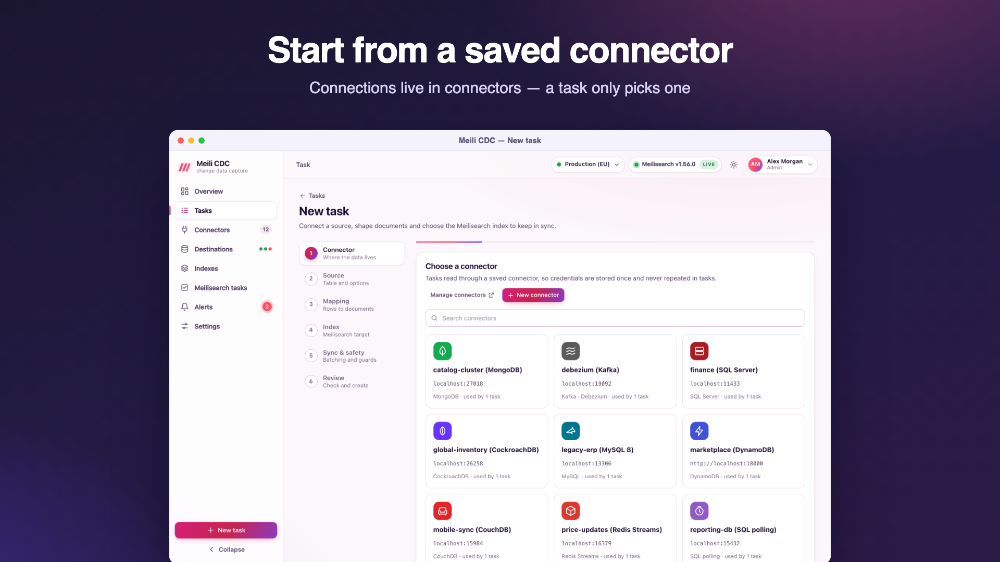
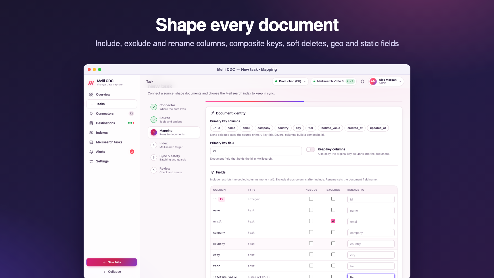
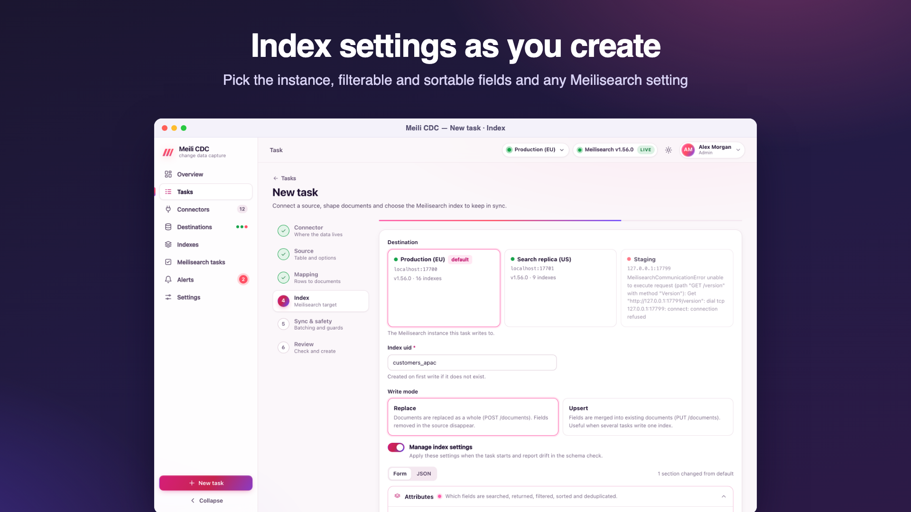

Create a task
A task connects one source table to one Meilisearch index. The wizard walks through six steps; every option it shows maps to a field of the task JSON used by the API and the tasks file.
Open Tasks → New task (admin role). The steps are Connector, Source, Mapping, Index, Sync & safety and Review. Errors are shown on the step they belong to, and the review lists anything left to fix.
1. Connector
Pick the saved connector to read from, or add one from the side panel without leaving the wizard. Credentials live in the connector only; the task never repeats them. See Connectors.

2. Source
Basics, then what to sync:
| Field | JSON | Notes |
|---|---|---|
| Name | name | Required. |
| Task id | id | Optional. Letters, digits, - and _, at most 64 characters. The wizard derives it from the name when empty; the API generates a random one. It cannot change later and names the replication slot, consumer group and webhook URL. |
| Description, tags | description, tags | Tags filter the task list. |
| Table (or collection, topic, stream…) | source.table | Required. Pick from the tables the connector lists, or type it. |
| Source-specific fields | source.schema, source.database, source.slot, source.publication, source.serverId, source.groupId, source.cursorColumn, source.pollInterval, source.webhookSecret | Shown only for the sources that use them; each source page explains them. |
Test connection (moderator) connects through the connector, reads the table's schema and transforms five sample rows with the current mapping, so you see real documents before anything is written. It uses POST /api/v1/tasks/test. For PostgreSQL, testing also creates the task's publication if it does not exist yet.
3. Mapping
The mapping turns rows into documents.

Document identity
| Field | JSON | Default | Meaning |
|---|---|---|---|
| Primary key columns | mapping.primaryKey | the source's primary key | Source columns that identify a row. Several columns build a composite id. Required when the source has no primary key. |
| Primary key field | mapping.primaryKeyField | id | The document field that holds the id; it becomes the index's primary key. |
| Keep key columns | mapping.keepKeyColumns | off | Also copy the original key columns into the document. Off: a key column is left out, unless it is the single key column and has the same name as the primary key field. |
How document ids are built
- A single integer key is written as a number (
42). - Other single keys are written as strings. Values made only of
a-z A-Z 0-9 -(integers, UUIDs, slugs) are kept as they are. Anything else is escaped into Meilisearch's id alphabet:_becomes__and every other byte becomes_XX(hex). For exampleuser@example.combecomesuser_40example_2Ecom. Escaped ids always contain_and raw ones never do, so two different keys never collide. - Composite keys join their escaped parts with
-(a-inside a part is escaped too):(7, "fr")becomes7-fr. - Ids longer than 511 bytes are replaced by
h-and a SHA-256 hex digest. - A row without a value for a key column cannot become a document; it goes to the dead letter queue as a
transformentry and the checkpoint moves on.
Two tasks may write to the same index (with the upsert write mode, to merge fields from several tables), but only with the same primary key field: saving a task whose key field differs from another task on that index and destination fails with 409.
Fields
| Field | JSON | Meaning |
|---|---|---|
| Include | mapping.include | Copy only these columns (key columns are always available for the id). Empty copies every column. |
| Exclude | mapping.exclude | Drop these columns. Applied after include. |
| Rename | mapping.rename | Map of source column to document field, for example {"customer_email": "email"}. |
Transforms
| Field | JSON | Meaning |
|---|---|---|
| Soft delete column and value | mapping.softDeleteColumn, mapping.softDeleteValue | Rows whose column matches turn into deletes. With an empty value, any non-null value deletes (a deleted_at timestamp, say), except boolean false. With a value, the column's text is compared case-insensitively, for example true or 1. |
| Geo latitude and longitude columns | mapping.geo.lat, mapping.geo.lng | Build Meilisearch's _geo field {"lat": …, "lng": …} from two numeric (or numeric string) columns. When either is missing or not a number, _geo is written as null. Add _geo to the filterable and sortable attributes to use geosearch. The source columns themselves are still copied unless excluded. |
| Time format | mapping.timeFormat | rfc3339 (default; ISO 8601 strings in UTC, readable but not usable for range filters or chronological sorting), unix (seconds since the epoch: filterable and sortable numbers) or unix_ms (milliseconds). |
Static fields
mapping.static adds the same fields to every document, for example {"tenant": "acme", "source": "eu-db"}. This is handy for multi-tenant indexes fed by several tasks. Static fields overwrite source columns of the same name; the primary key field always wins.
4. Index

| Field | JSON | Default | Meaning |
|---|---|---|---|
| Destination | index.destinationId | the default destination | The Meilisearch instance to write to. |
| Index uid | index.uid | the table name | Required; a-z A-Z 0-9 - _, up to 400 characters. Created on first write when missing, with the primary key field as its primary key. The wizard suggests existing indexes and shows their document count and other writers. |
| Write mode | index.writeMode | replace | replace sends whole documents (Meilisearch POST /documents): fields removed in the source disappear. upsert merges fields into existing documents (PUT /documents): useful when several tasks write one index, or when the source omits unchanged columns (PostgreSQL TOAST). In upsert mode a document deleted and re-created in the same batch is replaced, so stale fields do not come back. |
| Manage index settings | index.manageSettings | off | Apply index.settings when the task starts (and when you save it while stopped), and report drift in the schema check. |
| Settings | index.settings | none | Meilisearch index settings, the same JSON as Meilisearch's PATCH /indexes/{uid}/settings. Only the keys you set are managed. Edited with the settings editor. Unknown keys are rejected. |
5. Sync & safety
Sync mode
| Mode | JSON | Behaviour |
|---|---|---|
| Snapshot + stream | snapshot_stream (default) | Copy the existing rows, then stream every change. The usual choice. |
| Stream only | stream | Start from the current position; existing rows are not copied. Resync is refused in this mode. |
| Snapshot only | snapshot | Copy the rows once; the task then shows completed and stops. |
Batching
| Field | JSON | Default | Meaning |
|---|---|---|---|
| Batch size | sync.batchSize | 1000 | Documents per Meilisearch request. Larger batches index faster and use more memory; 5,000 to 10,000 suits big snapshots. |
| Flush interval | sync.flushInterval | 1s | The longest a change waits in a partial batch. Lower it for lower latency on quiet tables. |
| Max in-flight | sync.maxInflight | 4 | Batches sent to Meilisearch and not yet confirmed. Meilisearch auto-batches consecutive tasks, so 8 helps bulk loads. |
Within a batch, changes to the same document are coalesced and only the final state is sent. Confirmations are processed in order, so checkpoints never skip an unconfirmed batch. See Performance and tuning.
Retry
| Field | JSON | Default | Meaning |
|---|---|---|---|
| Max attempts | sync.retry.maxAttempts | 8 | Attempts for one Meilisearch write before the pipeline gives up and restarts. |
| Initial backoff | sync.retry.initialBackoff | 200ms | First wait; waits grow exponentially with full jitter. |
| Max backoff | sync.retry.maxBackoff | 30s | Upper bound of a wait. |
Network errors, Meilisearch 5xx, 429 and 408 are retried. A payload that is too large is split in half. Documents Meilisearch rejects are isolated into the dead letter queue. Configuration errors (a bad API key, an index whose primary key differs) stop the task as failed. When the attempts run out, the pipeline restarts with its own backoff (1 s up to 1 minute) and the task shows retrying.
Safety guards
| Field | JSON | Wizard default | API default | Meaning |
|---|---|---|---|---|
| Max delete ratio | sync.safety.maxDeleteRatio | 0.2 (20%) | 0 (off) | Hold the task when one flush would delete more than this share of the index (0 to 1; 0 disables the guard). |
| Min docs for delete guard | sync.safety.minDocsForDeleteGuard | 1000 | 1000 | The ratio check is skipped while the index has fewer documents. |
| Allow TRUNCATE | sync.safety.allowTruncate | off | off | Let a source truncate (or a dropped MongoDB collection) delete every document. When off, the task is held. |
| Zero-downtime resync | sync.safety.zeroDowntimeResync | on | off | Rebuild into a shadow index and swap it in when complete, so search keeps working during a resync. |
| Dump before resync | sync.safety.dumpBeforeResync | off | off | Ask Meilisearch for a dump before a zero-downtime rebuild starts (best effort: a failed dump is logged, the rebuild continues). |
A held task has stopped before applying the risky batch, so nothing was lost and nothing was deleted. Look at the source, then Resume (the batch is retried, and holds again if the guard still applies), raise the guard, or Resync. The hold reason is in the task's status, for example safety hold: a single batch would delete 5000 of 8000 documents (62% > 20% limit) or safety hold: the source table was truncated; enable safety.allowTruncate or resync the task. The delete guard reads the index size at most every 10 seconds.
6. Review
The review summarises the task, shows its JSON and lists any field that needs attention. Create saves it stopped; Create & start starts it right away (API: POST /api/v1/tasks?start=true). Validation errors come back as 422 with one message per problem.
Task JSON reference
The full shape accepted by POST /api/v1/tasks, PUT /api/v1/tasks/{id}, import and the tasks file. Defaults are applied when a field is empty or zero.
{
"id": "products",
"name": "Postgres products",
"description": "Catalog search",
"tags": ["shop"],
"desiredState": "running",
"source": {
"connectorId": "pg-main",
"type": "postgres",
"dsn": "postgres://cdc:secret@db:5432/shop",
"database": "",
"schema": "public",
"table": "products",
"slot": "",
"publication": "",
"serverId": 0,
"region": "", "endpoint": "", "accessKeyId": "", "secretAccessKey": "",
"brokers": [], "groupId": "",
"driver": "", "cursorColumn": "", "pollInterval": "2s",
"webhookSecret": ""
},
"mapping": {
"primaryKey": ["id"],
"primaryKeyField": "id",
"keepKeyColumns": false,
"include": [], "exclude": ["internal_notes"],
"rename": {"customer_email": "email"},
"softDeleteColumn": "deleted_at", "softDeleteValue": "",
"geo": {"lat": "lat", "lng": "lng"},
"timeFormat": "unix",
"static": {"tenant": "acme"}
},
"index": {
"uid": "products",
"destinationId": "",
"writeMode": "replace",
"manageSettings": true,
"settings": {"filterableAttributes": ["category"], "sortableAttributes": ["price"]}
},
"sync": {
"mode": "snapshot_stream",
"batchSize": 1000, "flushInterval": "1s", "maxInflight": 4,
"retry": {"maxAttempts": 8, "initialBackoff": "200ms", "maxBackoff": "30s"},
"safety": {
"maxDeleteRatio": 0.2, "minDocsForDeleteGuard": 1000,
"allowTruncate": false, "zeroDowntimeResync": true, "dumpBeforeResync": false
}
}
}- Use
connectorIdor the inline connection fields (type,dsn, …), not both: with a connector, the connector's connection fields are used andtypeis taken from it. - Durations are strings (
"500ms","2s"); a plain number is read as milliseconds. desiredStateisrunning,stoppedorpaused; the API sets it through actions, the tasks file through this field.- Responses add
createdAt,updatedAtand astatusobject, and mask secrets as••••••. Sending a masked value back keeps the stored secret.